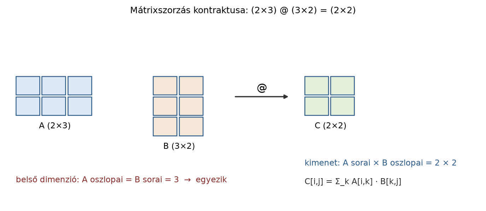

Belépő · szint: közép · idő: 60 perc · eszköz: NumPy
Előfeltétel: 10.1. alfejezet · Célkészség: Mátrixszorzás és lineáris transzformáció · Kimenet: működő kód és a labor ellenőrző tesztje.
A helyzet: három rendelést választottunk ki a
Northstar-példából. Minden rendeléshez két, a rendelés pillanatában
ismert jellemző tartozik: a szállítási távolság kilométerben
(distance_km) és a kosárérték eurócentben
(basket_minor). Egy kolléga adott nekünk egy kézi, még
nem tanított lineáris modellt a várható kézbesítési
napokra:
A három megfigyelési egység egy-egy rendelés:
| Rendelés | distance_km | basket_minor |
|---|---|---|
| R01 | 10 | 2500 |
| R02 | 25 | 5000 |
| R03 | 5 | 1000 |
Cél: ezt a három predikciót egyszerre, mátrixműveletként kiszámítani, és elkülöníteni a mátrixszorzást a koordinátánkénti szorzástól. A fejezetben nem becslünk súlyokat; a súlyokat adottnak vesszük. A súlyok becslése a következő alfejezet (10.3. alfejezet) feladata lesz.
Előzetes becslés a téma előtt: számold ki kézzel az első rendelés predikcióját: . Ha nap jött ki, jó úton jársz; a mátrixszorzás pontosan ezt a műveletet végzi el egyszerre minden sorra.
Induljunk ki egy közismert lineáris egyenletrendszerből:
Ezt úgy írhatjuk tömören, hogy az együtthatókat egy -es mátrixba gyűjtjük, az ismeretleneket pedig oszlopvektorba:
A mátrixszorzás (matrix product) szabálya tehát: a kimenet -edik eleme az -edik sora és a oszlopa skaláris szorzata. A skaláris szorzatot az előző, Vektor, skalárszorzat, norma és távolság alfejezetben definiáltuk: koordinátaszorzatok összege. A példa megoldása , , mert és .
A predikciós feladatban az szerepét a design mátrix (design matrix) veszi át, jele . Egy mátrix alakú, ha megfigyelés és oszlop van. Minden sor egy megfigyelés, minden oszlop egy jellemző. A fenti három rendelésnél ; ha a tengelymetszethez (intercept) tartozó, csupa -es oszlopot is hozzáadjuk, akkor :
A lineáris predikció:
Ebben a példában:
A mátrixszorzás alakszabálya: ha alakja és alakja , akkor alakja . A két belső dimenzió, , megegyezik, és a szorzás során eltűnik. Szavakkal: annyi kimenet lesz, ahány sor, és minden kimenet annyi tagot összegez, ahány oszlop.
A súlyok mértékegysége a predikciót teszi dimenzionálisan helyessé. Ha a cél a kézbesítési napok száma, akkor:
A súlyok tehát nem puszta számok: átváltják a jellemző mértékegységét a cél mértékegységére. A szorzatok azért összeadhatók, mert mindegyik tag már nap egységben van.

A teljes rajzolókód a
lab/figures/make_concept_figures.py
matrix_multiply() függvénye. A mátrixszorzás
kontraktusa három számból áll: A soraiból
(),
a közös belső dimenzióból
()
és B oszlopaiból
().
Az
szorzat eredménye
;
a belső
eltűnik. Ha a belső dimenziók nem egyeznek, a művelet nem értelmezhető,
és a NumPy ValueError-t dob.
| Bal | Jobb | Kimenet | Érvényes? |
|---|---|---|---|
(2, 3) |
(3, 2) |
(2, 2) |
igen |
(2, 3) |
(2, 3) |
— | nem: |
(3,) |
(3,) |
skalár | igen, 1D belső szorzat |
(2, 3) |
(3,) |
(2,) |
igen, 1D jobb oldal |
(3, 2) |
(2, 3) |
(3, 3) |
igen |
(2, 3), (3, 2), (2, 4) |
lánc | (2, 4) |
igen |
Kódolható feladat: írd meg a matmul_shape(left, right)
függvényt, amely a két shape-ből visszaadja a kimeneti shape-et, vagy
ValueError-t dob, ha a belső dimenzió nem egyezik.
Ellenőrzésképpen:
def matmul_shape(left, right):
if len(left) != 2 or len(right) != 2:
raise ValueError("2D shape-ek kellenek")
if left[1] != right[0]:
raise ValueError(f"belső dimenzió: {left[1]} != {right[0]}")
return (left[0], right[1])
import numpy as np
assert matmul_shape((2, 3), (3, 2)) == (2, 2)
assert matmul_shape((3, 2), (2, 3)) == (3, 3)
assert (np.zeros((2, 3)) @ np.zeros(3)).shape == (2,)
try:
matmul_shape((2, 3), (2, 3))
except ValueError:
pass
else:
raise AssertionError("a belső dimenzió hibáját jelezni kell")A (2,3) @ (3,) eset a NumPy-ban érvényes, de a fenti
2D-s matmul_shape szándékosan elutasítja; a 1D vektort
előbb (3,1) vagy (1,3) alakra kell hozni, vagy
külön függvényt kell írni rá. A
tests/test_matrix_contract.py a 2D-s eseteket, a belső
dimenzió hibáját, a láncszorzást és a NumPy tényleges shape-eredményeit
ellenőrzi.
A transzponált (transpose) mátrix sorait és oszlopait felcseréli:
Ha alakja , akkor alakja . A fenti példában:
A transzponálás a becslés későbbi lépésében, az mátrixban tér majd vissza; egyelőre elég annyi, hogy a sorok és oszlopok megcserélésével a „minta” és a „jellemző” irány felcserélhető.
A design mátrix oszlopai tekinthetők bázisfüggvény-vektoroknak (basis vectors). A predikció az oszlopok lineáris kombinációja:
A csupa -es oszlop az intercept oszlop; a hozzá tartozó a tengelymetszet, vagyis az a predikció, amikor minden numerikus jellemző nulla. A „bázis” itt annyit jelent: a modell által elérhető predikciók az oszlopvektorok összes lehetséges lineáris kombinációja. Ez a kép lesz fontos a legkisebb négyzeteknél (10.3. alfejezet) és a főkomponens-elemzésnél (24.1. alfejezet).
A NumPy-ban és sok más eszközben két művelet hasonlít egymásra:
* operátor,
angolul Hadamard product): azonos alakú tömbök azonos pozíciójú elemeit
szorozza össze.@ operátor): sorok és
oszlopok skaláris szorzatát számolja, az előbb leírt szabállyal.A predikció nem elemenkénti szorzás, mert alakja , a súlyok alakja pedig , tehát nincs sor-sor pár. A helyes művelet a mátrixszorzás: minden sor a teljes súlyvektorral kombinálódik. A koordinátánkénti szorzás csak közbülső lépés lehet, de önmagában nem adja a predikciót.
A labor konkrét célja: három mintára, két valódi jellemzővel
számítsuk ki a lineáris predikciót először kézzel, majd a NumPy
@ operátorával. A kézi számítást már elvégeztük fent; az
eredmény
.
import numpy as np
# Minden sor egy rendelés.
# Az első oszlop az intercept, a második a distance_km,
# a harmadik a basket_minor.
X = np.array([
[1.0, 10.0, 2500.0],
[1.0, 25.0, 5000.0],
[1.0, 5.0, 1000.0],
])
# Súlyok: w0 = 2 nap, w1 = 0.3 nap/km, w2 = 0.0002 nap/eurocent.
w = np.array([2.0, 0.3, 0.0002])
# Mátrixszorzás: (3, 3) @ (3,) -> (3,)
y_hat = X @ w
# Kézi ellenőrzés oszloponkénti súlyozott összeggel.
manual = X[:, 0] * w[0] + X[:, 1] * w[1] + X[:, 2] * w[2]
print("X.shape:", X.shape) # (3, 3)
print("w.shape:", w.shape) # (3,)
print("y_hat.shape:", y_hat.shape) # (3,)
print("y_hat:", y_hat) # várhatóan [5.5 10.5 3.7]
print("allclose:", np.allclose(y_hat, manual, rtol=1e-12, atol=1e-12))Szemléltető kimenet, nem mért futtatás; a kézi kontroll alapján várható:
X.shape: (3, 3)
w.shape: (3,)
y_hat.shape: (3,)
y_hat: [ 5.5 10.5 3.7]
allclose: TrueA manual sor azt mutatja, hogy a mátrixszorzás belül
oszloponkénti elemenkénti szorzások összege, de maga az
X * w kifejezés nem a predikció. Ezt a megkülönböztetést a
gyakori tévedéseknél részletezzük.
A három predikció:
,
,
nap. Az első rendelésre a kézi számítás pontosan ezt adta, tehát a kód
alakja és iránya jó. A kimenet shape=(3,),
dtype=float64, mert a bemenetek float64
mátrixok. A np.allclose azért hasznos, mert a
0.3 és 0.0002 bináris ábrázolása nem mindig
egzakt; rtol=1e-12, atol=1e-12 toleranciával a gépi és kézi
eredmény megegyezik.
Értelmezési korlát: ez a lineáris modell additív és globálisan lineáris. Ha a távolság és a kosárérték , a predikció nap; ha a távolság nagyon nagy, a predikció tetszőlegesen nagy lehet. A valós kézbesítés nem lehet negatív és nem nőhet minden határon túl; a későbbi modellezésnél nemlineáris vagy korlátos modellt választunk. A log-skálát 9.2. alfejezetben láttuk: ha a cél lenne, a súlyok multiplikatív hatást jelentenének a nyers skálán. Itt azonban nyers skálán dolgozunk, ezért a hozzájárulások összeadódnak.
Rövid pandas-visszautalás (6.2. alfejezet):
ha a mátrixot egy DataFrame-ből készítjük a
.to_numpy() hívással, a mátrix elveszíti a sorindexet. A
predikció visszaírásánál ezért mindig a DataFrame eredeti
indexét használjuk, ne a NumPy pozícióját. A példában a sorrend és az
index azonos, de nagyobb táblánál ez a leggyakoribb csendes hiba.
Értelmezés. Adott egy másik kézi súlyvektor:
nap,
nap/km,
nap/eurocent. Számold ki kézzel a predikciót arra a két új rendelésre,
ahol (distance_km, basket_minor) rendre
és
.
Mi a mértékegysége
és
fontos szerepének?
Megvalósítás. Építsd meg
-et
a fenti három rendelés adatával, de a súlyokat most válaszd
,
,
értékűre. Számold ki
értékét a @ operátorral, és ellenőrizd az első sorra kézi
számítással. Ellenőrizd a shape értékét is.
Hibakeresés. Egy kolléga ezt írta ugyanarra az -re, súlyokkal:
pred = X * wMi ez pontosan? Miért nem a lineáris predikció? Add meg, mit kap a
kolléga az első sorban, és javítsd a kódot két módon: @
operátorral, illetve az elemenkénti szorzat explicit
sorösszegzésével.
Megváltozott feltétel / továbbvitel. Adj a
modellhez egy harmadik jellemzőt: quantity_sum, az adott
rendelés összes darabszámát. A három rendelésre legyen
,
az új súly pedig
nap/darab. Írd fel az új
mátrixot, add meg az alakját, és számold ki az új predikciókat
@ operátorral. Ellenőrizd kézzel az R01 rendelés
predikcióját.
Értelmezés: mátrixszorzás és nem kommutativitás. Legyen
Számold ki kézzel -t és -t. Milyen alakú a két eredmény? Mit jelent ez a „mátrixosztás” szempontjából?
1. megoldás. A predikció:
A mértékegysége nap/km, mert a km-t napra váltja; a mértékegysége nap/eurocent. A mértékegységek nélkül a és tagot nem lehetne egy nap-skálán összeadni.
2. megoldás.
import numpy as np
X = np.array([
[1.0, 10.0, 2500.0],
[1.0, 25.0, 5000.0],
[1.0, 5.0, 1000.0],
])
w = np.array([1.8, 0.22, 0.00035])
y_hat = X @ w
print("shape:", y_hat.shape)
print("y_hat:", y_hat)Kimenet (NumPy 2.5.4-gyel futtatva): shape: (3,),
y_hat: [4.875 9.05 3.25 ].
Ellenőrzés az első sorra:
és a második sorra: .
3. megoldás. A X * w kifejezés
NumPy-ban elemenkénti szorzás broadcastinggal. Mivel
alakja
és
alakja
,
a
az utolsó tengelyre illeszkedik, ezért a kolléga eredménye:
Ez nem a predikció, hanem egy -as mátrix. Az első sor helyes predikciója , tehát a kolléga csak akkor kapná meg a predikciókat, ha utána soronként összegezné, például:
pred = (X * w).sum(axis=1)Ez azonban véletlenül működik az egydimenziós esetben; ha oszlopvektor, az elemenkénti szorzás egészen mást ad. A helyes, szándékot tükröző megoldás a mátrixszorzás:
pred = X @ wA javítási elv: mindig a dimenziókból indulj ki, és a predikciót -ként írd le. Az elemenkénti szorzás nem „rossz”, hanem más művelet.
4. megoldás. Az új design mátrix 3 sor és 4 oszlop:
Kódban:
X_new = np.array([
[1.0, 10.0, 2500.0, 4.0],
[1.0, 25.0, 5000.0, 6.0],
[1.0, 5.0, 1000.0, 7.0],
])
w_new = np.array([2.0, 0.3, 0.0002, 0.1])
y_hat_new = X_new @ w_new
print("X_new.shape:", X_new.shape) # (3, 4)
print("y_hat_new:", y_hat_new) # [5.9 11.1 4.4]Kézi ellenőrzés R01-re:
nap. A X_new.shape
,
mert az intercept és a három jellemző négy oszlopot ad.
5. megoldás. A szorzás:
A két eredmény különböző, tehát a mátrixszorzás nem kommutatív. Ezért nincs értelmes „mátrixosztás” úgy, ahogy a valós számoknál működik. Ha egy egyenletet akarunk megoldani, külön műveletet használunk: vagy numerikusan jobb . A design mátrix predikciója viszont nem old meg egyenletet: ott adott, és kiszámítása szorzás.
Az invertálás, az elemenkénti osztás és a lineáris rendszer megoldása külön művelet.
Tegyük fel, hogy valaki meg akarja oldani a fenti rendszert és esetén. Három gyakori, de eltérő jelentésű kifejezés:
Elemenkénti osztás: b / A
Python/NumPy-ban nem mátrixosztás. Ha egyáltalán lefut, a /
elemenként oszt, és az alakokat a broadcasting szabályai szerint
illeszti. A fenti
alakja
,
alakja
;
a broadcasting szerint ez érvényes, ezért a b / A hiba
nélkül, csendben lefut, és
alakú elemenkénti hányadost ad
([[6.5, 3.667], [3.25, 11.0]], NumPy-val ellenőrizve), nem
az egyenletrendszer megoldását.
Invertálás: np.linalg.inv(A) @ b
matematikailag helyes, ha
invertálható. Numerikusan azonban rossz szokás, mert az inverz
kiszámítása instabil lehet. Az ajánlott megoldás:
z = np.linalg.solve(A, b) # z = [2.0, 3.0]Predikció: X @ w. Itt
általában nem négyzetes; ha
,
nem is beszélhetünk egyértelmű inverzről. A cél pedig nem megoldani egy
egyenletet, hanem a súlyokkal kiszámítani a predikciót.
A koordinátánkénti szorzás csendes csapdája. A fenti
X * w példa mutatja, hogy a broadcasting miatt a rossz
művelet is lefuthat. Ellenőrzésképpen soha ne csak a kódot futtasd,
hanem egy sorra kézzel is számold ki a várt eredményt.
A mátrixszorzás alakszabálya a belső dimenzió egyezése:
.
Ha ezt a dimenziót nem ellenőrizzük, a broadcasting kiszámítható, de
értelmetlen eredményt adhat.
Adott
alakja
és
alakja
.
Mi a predikció alakja, és hány tagot összegez minden sor?
<details><summary>Válasz</summary>A predikció alakja
;
minden sor 8 tagot (intercept + 7 jellemző, ha az első oszlop intercept)
összegez.</details>
Miért kell az interceptet külön
-es
oszlopként felvenni?
<details><summary>Válasz</summary>Mert a mátrixszorzás
minden kimenetet
alakban állít elő. Az
-es
bejegyzés révén jelenik meg a
tag, amely így nem függ egyetlen jellemzőtől
sem.</details>
Milyen műveletek a * és a @
NumPy-ban?
<details><summary>Válasz</summary>A *
elemenkénti (Hadamard-) szorzás broadcastinggal; a @
mátrixszorzás, sor-oszlop skaláris
szorzatokkal.</details>
Mi az alakszabálya
szorzatnak, ha
alakja
?
<details><summary>Válasz</summary>
alakja
,
így a szorzat
;
ez lesz a normálegyenlet mátrixa a következő
alfejezetben.</details>
A NumPy * operátora elemenkénti szorzást végez, míg a
@ mátrixszorzást. A vektor- és mátrixdimenziókat
ellenőrizzük, mert a nem szándékolt broadcasting numerikusan lefuthat
úgy is, hogy hibás eredményt ad.
A mátrixszorzás a lineáris predikció alapművelete: az
design mátrix minden sorát ugyanazzal a
hosszú súlyvektorral kombinálja skaláris szorzatként, így
egyszerre adja meg minden megfigyelés predikcióját. A design mátrix sora
egy megfigyelés, oszlopa egy jellemző; az interceptet csupa
-es
oszlop képviseli. A transzponálás sor és oszlop felcserélése, a bázisok
a mátrix oszlopvektorainak lineáris kombinációi. A NumPy @
operátora mátrixszorzás, a * elemenkénti szorzás; a kettő
nem felcserélhető. A következő alfejezetben ezt a műveletet használjuk a
vetítéshez és a legkisebb négyzetes becsléshez, ahol
és
jelenik meg.